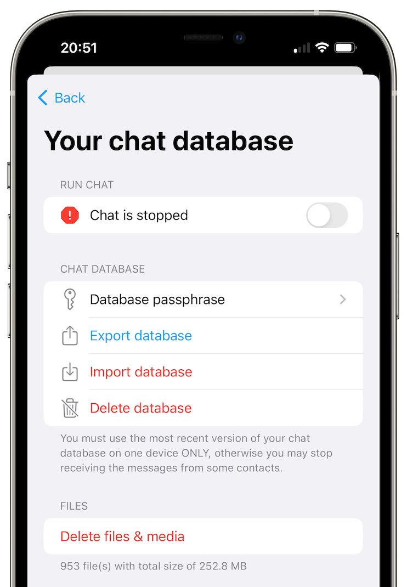

SimpleX Chat v4 with encrypted local database is released
Published: Sep 28, 2022
What's new in v4
- encrypted local chat database.
- support for self-hosted WebRTC ICE servers.
- improved stability of creating new connections: more reliable groups, files and contacts.
- deleting files and media.
- For developers - TypeScript SDK for integrating with SimpleX Chat (e.g., chat bots or chat assistants).
- animated images in Android app.
- disable messages per contact / group in terminal app (it is already supported in mobile apps).
Also, this version adds German language to mobile apps UI - huge thanks to Michael who contributed them!
Other new features since v3:
- secret chat groups (see details in v3.1 announcement - they are fully decentralized, only their members know these groups exist.
- accessing messaging servers via Tor with support for .onion server addresses (see details in v3.1 and v3.2 announcements) - to protect users anonymity on the TCP transport level.
- Incognito mode - sharing a random profile name with each new contact, to completely eliminate any shared data between them (see details in v3.2 announcement).
- endless scrolling and search in chats.
- reduced Android APK size for direct download and in F-Droid repo from 200 to 50Mb!
Implementation audit is arranged for October!
Local chat database encryption

SimpleX Chat focus has always been on protecting messages in delivery, not when they are stored on the device. This release changes it - now all messages that you receive and send are stored on the device encrypted with SQLCipher.
Please note: If you are already using SimpleX Chat, your database will remain unencrypted until you enter the passphrase via the app settings. You have to remember the passphrase you choose, as there is no way to recover it if it is lost.
By default your passphrase will be stored securely on the device (in KeyChain on iOS or encrypted with the key stored in TPM, if available, on Android) - it is only accessible to the app, and only on one device. Storing passphrase is required for instant notifications to work. In this case, if you lose the passphrase, the app will continue to work, but you will not be able to change the passphrase and to migrate your user profile to another device.
For additional security of your messages you also have the option to remove the passphrase from the device. In this case you will need to enter the passphrase every time you start the app. The notifications will continue to work only while the app is in the background. For iOS it means that periodic and local notifications will work, but instant notifications will only show that there is a message available, but not message content or who it is from - you will need to open the app and enter the passphrase to see the messages. In this case, if you lose the passphrase, you will not be able to open the app or decrypt the database - so make sure you store it safely.
Self-hosted WebRTC ICE servers

You could make audio and video calls via SimpleX Chat WebRTC servers since v3 - that meant that our servers could observe your IP addresses. This release adds configuration to use your own STUN/TURN servers, helping you protect your privacy.
See this guide to learn how to deploy your own coturn server and to configure the mobile apps to use it.
Improved stability of creating new connections
Secret groups made SimpleX Chat much more useful, but because SimpleX groups are completely decentralized and for them to work each member should connect to all other members, sometimes these connections fail and the group becomes fragmented - some members do not receive all messages. That was more common for larger groups, as the number of required member connections is O(n^2) of the group size.
The reason for that problem was that some network operations required for group connections were not retried. This release improves stability of all network operations - receiving messages, making new contact connections, receiving files and connecting to members in the groups you join.
Deleting files and media
While the database with messages and all contacts is now encrypted, the files you receive and send are not (we are planning to improve it later). To protect the security of the files we have added an option to delete all files from the app storage - just make sure not to do it before the files you send are delivered to the recipients, or they won't receive them.
For developers - TypeScript SDK for integrating with SimpleX Chat
It's been quite some time since it's been possible to create a chat-bot using SimpleX Chat as a library - but you had to either write Haskell code or use foreign function interface in any other language.
With v4 we are announcing TypeScript SimpleX Chat Client SDK that you can use to create any integrations with SimpleX Chat CLI.
You can run SimpleX Chat CLI as a local WebSockets server on any port, we use 5225 here:
simplex-chat -p 5225
Then you can create a JavaScript or TypeScript application that would connect to it and control it via a simple WebSocket API. TypeScript SDK defines all necessary types and convenience functions to use in your applications. See this sample bot and README page.
SimpleX Chat API allows you to:
- create and change user profile (although in most cases you would do it manually, via SimpleX Chat terminal app).
- create and accept invitations or connect with the contacts.
- create and manage long-term user address, accepting connection requests from the code or automatically.
- create, join and manage groups - this can be used, for example, to connect two different people who connected to chat-bot.
- send and receive files.
Some possible applications you can create:
- peer-to-peer trading bots, that would connect people with matching buy/sell orders,
- bots to access information,
- language translation bots,
- etc.
As SimpleX Chat protocols provide strong encryption and authorization of the connections, you could use it not only in various communication scenarios, but also to remotely control any equipment where high level of security is required, for example:
- smart home automation,
- network services,
- remote deletion of application data,
- etc.
We are really looking forward to seeing what applications you create - please submit your ideas and implementations, we will publish the links on a separate page on the website and GitHub repository.
SimpleX platform
Some links to answer the most common questions:
How can SimpleX deliver messages without user identifiers.
What are the risks to have identifiers assigned to the users.
Technical details and limitations.
How SimpleX is different from Session, Matrix, Signal, etc..
We ask you to help us pay for 3rd party security audit
We have already signed the agreement and paid for the security audit!
It is planned for October, and if there are no major issues we will publish this report straight away, otherwise - once we fix them.
This is a major expense for use - over $20,000 - I would really appreciate if you could help us cover some part of this cost with the donations.
Our promise to our users is that SimpleX protocols are and will remain open, and in public domain, - so anybody can build the future implementations of the clients and the servers. We will be establishing a legal framework this year to ensure that it doesn't change if the ownership of SimpleX Chat Ltd changes at any future point.
Please consider making a donation - it will help us to raise more funds. Donating any amount, even the price of the cup of coffee, would make a huge difference for us.
It is possible to donate via:
- GitHub: it is commission-free for us.
- OpenCollective: it also accepts donations in crypto-currencies, but charges a commission.
- Monero wallet: 8568eeVjaJ1RQ65ZUn9PRQ8ENtqeX9VVhcCYYhnVLxhV4JtBqw42so2VEUDQZNkFfsH5sXCuV7FN8VhRQ21DkNibTZP57Qt
- Bitcoin wallet: 1bpefFkzuRoMY3ZuBbZNZxycbg7NYPYTG
Thank you,
Evgeny
SimpleX Chat founder